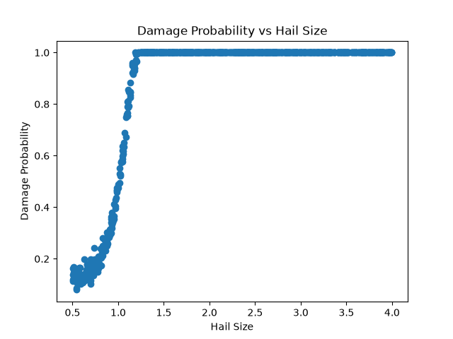
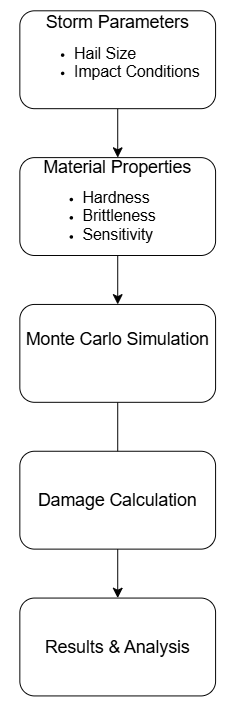
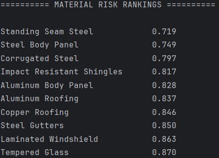

PYTHON • MONTE CARLO SIMULATION • DATA ANALYSIS
A Python-based Monte Carlo simulation that models hail damage across different roofing materials based on material properties and simulated storm conditions.

Hail Damage Simulator is a Python-based engineering simulation tool designed to estimate the probability and severity of hail damage across different materials. The program combines hail impact physics, material properties, environmental conditions, inspection characteristics, and Monte Carlo simulation to model potential damage outcomes. It supports both manual assessment and a prototype image-analysis workflow, and can simulate 1,000 randomized storms to analyze damage probability and compare material performance.
Hail damage assessment can depend on numerous interacting variables, including hail size, impact energy, material properties, roof age, roof slope, temperature, and observed damage characteristics. Evaluating thse factors individually makes it difficult to consistently estimate damage risk or compare how different materials respond to the same storm conditions.
I developed this project to explore how engineering principles and computational modeling could be applied to a real-world problem involving weather-related property damage. I wanted to combine physics, probability, material behavior, and programming into one system rather than relying on a single deterministi calculation. The project also provided an opportunity to explore how future computer-vision techniques could be incorporated into automated damage assessment.
I designed and developed the simulator independently, including the program architecture, physics calculations, material database, damage-probability model, Monte Carlo simulation, data export, reporting, and visualization components. I also designed the prototype image-analysis interface and integrated its output into the damage-assessment pipeline.
The simulator was structured as a modular Python application, with seperate components responsible for physics calculations. material properties, probability modeling, simulation, visualization, reporting, data export, and image analysis. Inputs are processed through the physics and material models before being combined into a damage-probability estimate. The Monte Carlo module then generates randomized storm conditions to evaluate the model across a larger range of scenarios.

Python was used as the primary development language. The project uses modular Python files to separate the physics model, probability calculations, material database, Monte Carlo simulation, reporting, visualization, image processing, and CSV data export. Key libraries include NumPy/Matplotlib-style scientific visualization tools, Python's built-in mathematics, statistics, random, and CSV modules, and Pillow for image handling.
# Example structure of the simulation
def calculate_hail_physics(hail_diameter_inches):
radius_m = (hail_diameter_inches * 0.0254) / 2
hail_mass = (4/3) * math.pi * (radius_m ** 3) * 917
velocity_ms = math.sqrt(
(2 * hail_mass * 9.8) /
(1.225 * math.pi * (radius_m ** 2) * 0.44704)
)
impact_energy = 0.5 * hail_mass * velocity_ms ** 2
return {
"mass": hail_mass,
"velocity": velocity_ms,
"energy": impact_energy
}
The simulator was tested using randomized Monte Carlo simulations to evaluate its behavior across a wide range of storm conditions. Each simulation randomly varies hail size, material age, roof slope, temperature, number of impacts, dent characteristics, and damage distribution. The program performs 1,000 simulated storms for a selected material and calculates damage events, average damage probability, standard deviation, and a 95% confidence interval.
The simulation produces both individual damage assessments and statistical results across large numbers of randomized storms. The model demonstrates how increasing hail size and impact energy influence predicted damage probability, while material properties and environmental conditions modify the resulting risk. The simulator also allows materials to be compared using repeated Monte Carlo simulations, providing a way to rank materials according to their simulated damage probability.

These results provided a way to compare the relative performance of different materials under the same simulated storm conditions.
One of the main challenges was developing a probability model that could incorporate both physical impact characteristics and less deterministic factors such as material age, temperature, roof slope, and observed damage characteristics. Another challenge was structuring the program so that the individual components could be modified independently as the model evolved. I addressed this by separating the project into modular Python files for physics, probability, simulation, visualization, reporting, and material data.
This project strengthened my understanding of how engineering models can be translated into software. I learned how to combine physics-based calculations with probabilistic modeling and Monte Carlo simulation, while also gaining experience with modular program architecture, statistical analysis, data visualization, and automated data export. I also learned the importance of clearly distinguishing between a prototype model and a validated real-world prediction system.
Future development would focus on improving the physical and statistical validity of the model and expanding the image-analysis capability. The current image-analysis module is a prototype interface, so a future version could use a trained computer-vision model to automatically identify hail size, dent geometry, material type, and damage distribution from real inspection photographs. Additional improvements could include calibration against real insurance or field-inspection datasets, more detailed impact physics, uncertainty analysis, and a graphical user interface for easier use by inspectors or engineers.
This project gave me experience turning a real-world engineering problem into a computational model and using simulation results to investigate system behavior. It also reinforced the importance of validating assumptions when using computational models to represent physical systems.